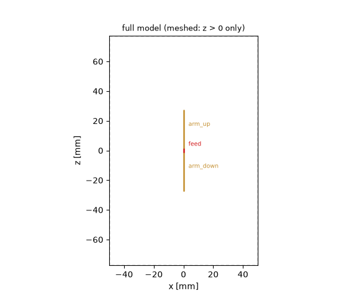
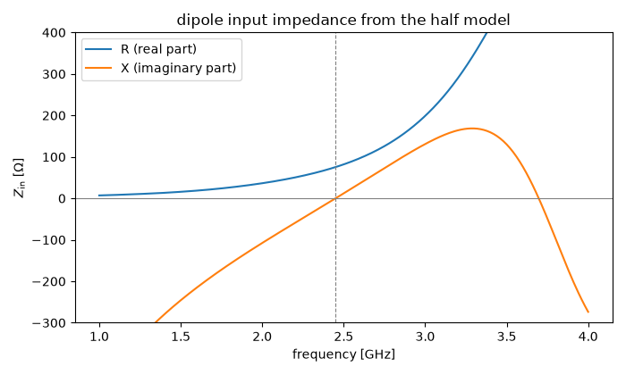
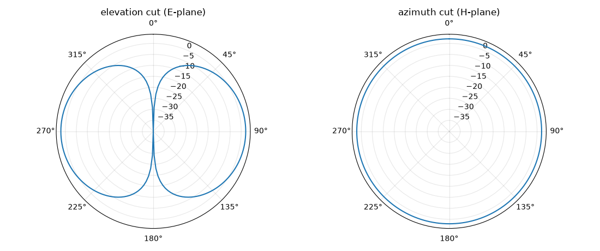
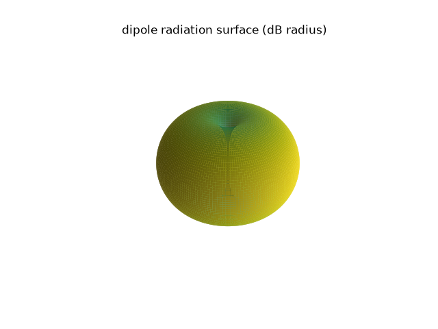

Note
Go to the end to download the full example code.
Antenna symmetry: a half-wave dipole as a half model#
The microstrip tutorial cut a model in half with a magnetic symmetry plane through the substrate. Antennas offer the electric counterpart: a center-fed dipole is mirror-symmetric about the plane through its feed, and because the current flows through that plane, the mirror is an electric wall — the same image theory that turned the monopole tutorial’s ground plane into a virtual dipole, now used deliberately to halve the computation.
Three things meet in this model: the symmetry declaration, a lumped feed sitting exactly on the symmetry plane, and the far-field monitor reconstructing the full-sphere radiation pattern from the half that was solved.
The geometry: declared whole, meshed half#
Everything is declared in full-model coordinates — both dipole arms,
the full air volume, the feed crossing z = 0. The single declaration
"zmin": "SymmetryPEC" states that the plane at z = 0 is an
electric mirror; the mesher then simply never meshes the lower half.
Deleting the lower arm by hand would change nothing but the room for
error.
The feed deserves a closer look. Its endpoints straddle the symmetry plane, its reference impedance is the full dipole’s 73 Ω. Internally the solver keeps the meshed half of the device — half the gap in series with half the impedance — and reports every quantity at full-model scale, exactly as the port impedances of the microstrip tutorial did. Declared watts stay full-model watts.
import matplotlib.pyplot as plt
import numpy as np
import magnelio as mio
from magnelio import geo, monitors, plots, ports
h_arm = 27.3e-3 # arm length incl. half the feed gap (trimmed; ~0.45 lambda total)
gap = 2.0e-3 # feed gap
a_wire = 0.5e-3 # wire radius
pad = 50.0e-3 # clearance antenna -> absorbing boundary
air = mio.Material.air()
model = mio.GeometryModel(
boundary_conditions={
"zmin": "SymmetryPEC", # electric mirror through the feed
"xmin": "CPML",
"xmax": "CPML",
"ymin": "CPML",
"ymax": "CPML",
"zmax": "CPML",
}
)
model.add(
geo.Brick(
origin=(-pad, -pad, -(h_arm + pad)),
size=(2 * pad, 2 * pad, 2 * (h_arm + pad)),
material=air,
)
)
model.add(
geo.ThinWire(
geo.Curve.polyline([(0.0, 0.0, gap / 2), (0.0, 0.0, h_arm)]),
radius=a_wire,
name="arm_up",
)
)
model.add(
geo.ThinWire(
geo.Curve.polyline([(0.0, 0.0, -h_arm), (0.0, 0.0, -gap / 2)]),
radius=a_wire,
name="arm_down",
)
)
model.add_port(
ports.PortLumped(
name="feed",
start=(0.0, 0.0, -gap / 2),
end=(0.0, 0.0, gap / 2),
Z0=73.0,
)
)
fig, ax = plots.plot_cross_section(model, "y", 0.0, title="full model (meshed: z > 0 only)")

0 only)" class = "sphx-glr-single-img"/>Mesh, monitors, run#
The mesh shows the declaration at work: the grid starts at z = 0. The far-field monitor needs no target frequency band of its own — one frequency is enough for a pattern — and no geometry: it places its recording box inside the free-space region and books the symmetry plane automatically.
f_min, f_max = 1.0e9, 4.0e9
f0 = 2.45e9
mesh = mio.Mesh.from_geometry(
model,
mio.MeshControl(min_nodes_per_wavelength=20),
f_max=f_max,
)
print(f"grid: {mesh.Nx} x {mesh.Ny} x {mesh.Nz} cells, z from {mesh.grid.z[0] * 1e3:.0f} mm")
farfield = monitors.MonitorFarField(freqs=[f0], name="farfield")
analysis = mio.AnalysisScatteringTD(
mesh=mesh,
f_min=f_min,
f_max=f_max,
monitors=(farfield,),
verbose=False,
)
f_axis = np.linspace(f_min, f_max, 301)
result = analysis.run(f_axis=f_axis, excited=["feed"])
grid: 46 x 46 x 55 cells, z from 0 mm
Full-model electrical results from half a model#
The input impedance derived from S11 lands at the dipole’s textbook values — resonance where the total length is a bit under half a wavelength, feed resistance near 73 Ω. A missing factor of two here would be the monopole reading; the symmetry accounting is what keeps it away.
s11 = result.S("feed", "feed")
zin = 73.0 * (1 + s11) / (1 - s11)
im = zin.imag
i = int(np.nonzero((im[:-1] < 0) & (im[1:] >= 0))[0][0])
f_res = f_axis[i] - im[i] * (f_axis[i + 1] - f_axis[i]) / (im[i + 1] - im[i])
r_res = float(np.interp(f_res, f_axis, zin.real))
print(f"resonance (Im Zin = 0): {f_res / 1e9:.2f} GHz")
print(f"feed resistance there: {r_res:.1f} Ohm (thin-dipole textbook: ~73)")
fig, ax = plt.subplots(figsize=(7, 4.2))
ax.plot(f_axis / 1e9, zin.real, label="R (real part)")
ax.plot(f_axis / 1e9, zin.imag, label="X (imaginary part)")
ax.axhline(0.0, color="gray", lw=0.8)
ax.axvline(f_res / 1e9, color="gray", lw=0.8, ls="--")
ax.set_xlabel("frequency [GHz]")
ax.set_ylabel(r"$Z_\mathrm{in}$ [$\Omega$]")
ax.set_ylim(-300, 400)
ax.legend()
ax.set_title("dipole input impedance from the half model")
fig.tight_layout()

resonance (Im Zin = 0): 2.45 GHz
feed resistance there: 75.4 Ohm (thin-dipole textbook: ~73)
The full-sphere pattern#
Unlike the monopole’s ground plane, a symmetry plane is bookkeeping, not physics: the mirror half of the world exists, so the pattern covers the whole sphere. The elevation cut shows the dipole donut — and the peak lands at the half-wave dipole’s 2.15 dBi.
pattern = farfield.result(f0)
fig, axes = plt.subplots(1, 2, figsize=(11.0, 4.6), subplot_kw={"projection": "polar"})
pattern.plot_cut(plane="phi", angle=0.0, ax=axes[0], title="elevation cut (E-plane)")
pattern.plot_cut(plane="theta", angle=np.pi / 2, ax=axes[1], title="azimuth cut (H-plane)")
fig.tight_layout()
print(f"peak directivity: {10 * np.log10(pattern.directivity.max()):.2f} dBi")
print(f"peak realized gain: {10 * np.log10(pattern.realized_gain.max()):.2f} dBi")
print(f"radiated power: {pattern.P_rad:.3f} W per incident W")

peak directivity: 2.15 dBi
peak realized gain: 2.07 dBi
radiated power: 0.982 W per incident W
The elevation cut carries the shape; the azimuth cut is the circle every wire antenna owes its users. The 3D surface puts both into one picture — the radius is the gain in dB above the floor, so the axial nulls show as pinch points.

Where to go next#
New in this tutorial: an electric symmetry plane halving an antenna problem, a lumped feed declared across the symmetry plane in full-model coordinates, the full-sphere far field reconstructed from a half model, and pattern cuts plus the 3D radiation surface. The same three ingredients carry over unchanged to patch antennas and arrays — declare the full structure, state its symmetry, and read full-model answers.
Total running time of the script: (0 minutes 26.819 seconds)